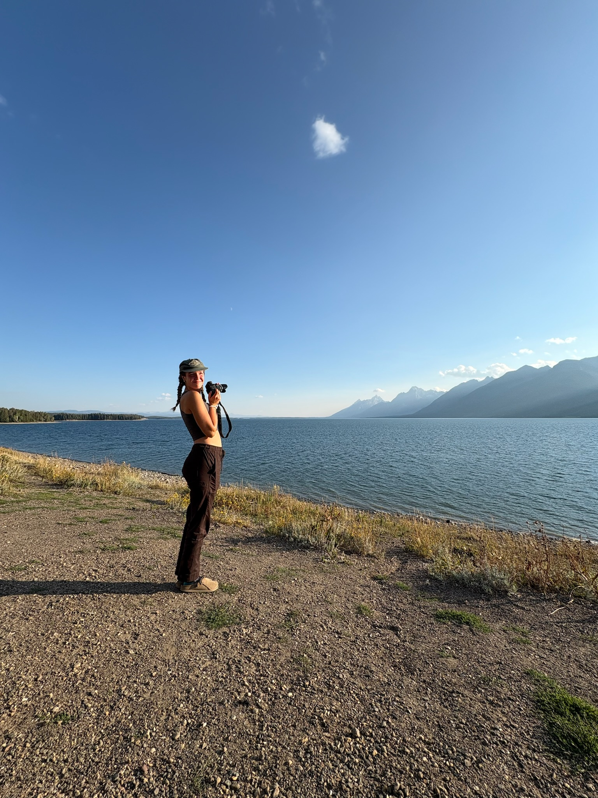
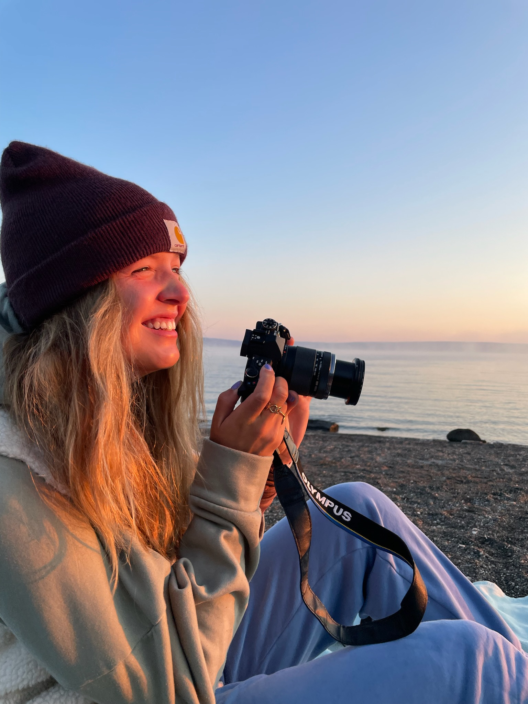
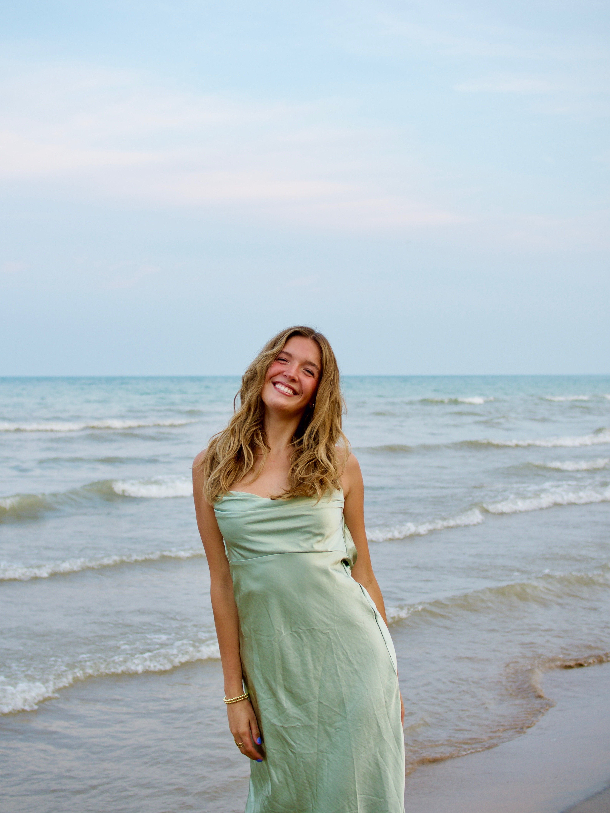

Welcome! I’m Maddi — your local Port Washington photographer.
Originally from the Twin Cities, Minnesota, I’ve spent the past six years behind the camera capturing everything from joyful engagements and heartfelt graduations to stunning wildlife and fine art scenes.
Photography is more than just a passion for me — it’s a way to tell stories, preserve emotions, and turn fleeting moments into lasting memories. I’d be honored to help you capture your life’s most meaningful moments.
Let’s connect and start planning your perfect photo session!